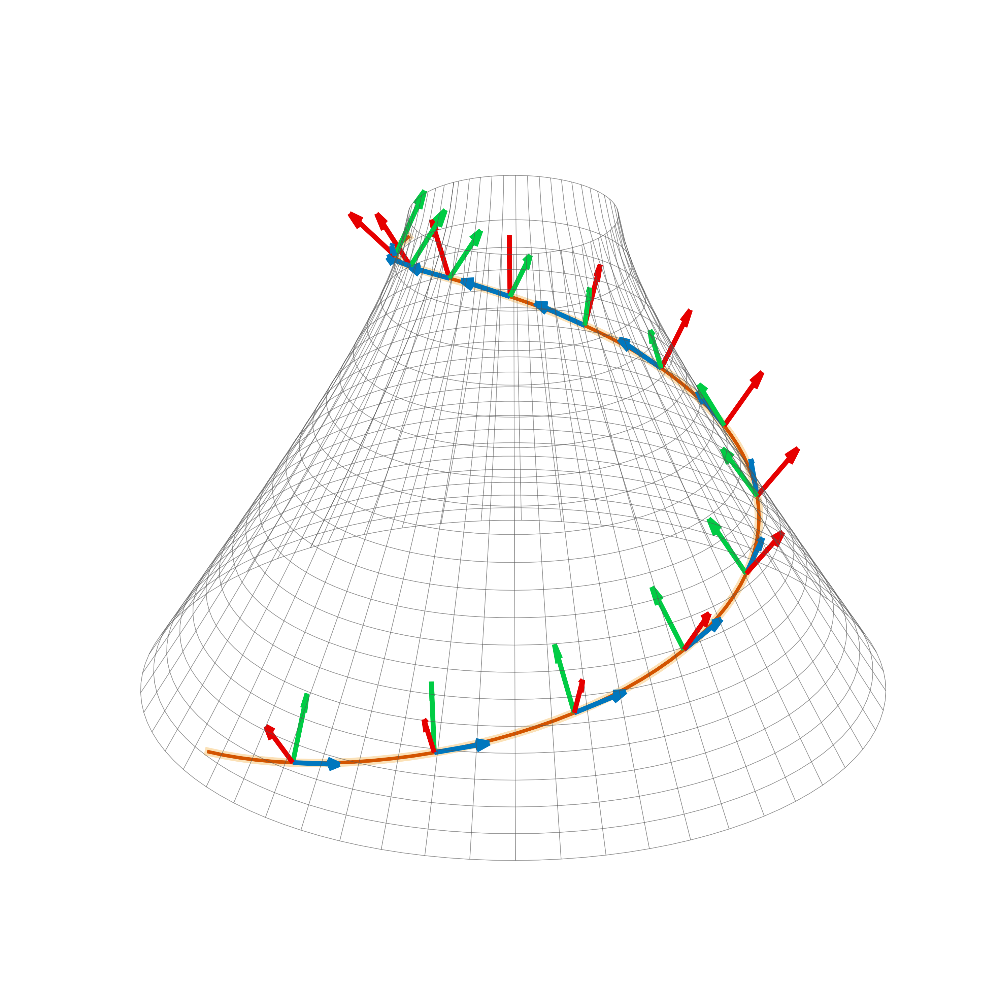

Research
My research connects mathematical physics to observational astronomy, applying tools from information geometry, gauge theory, and beyond to the challenges of gravitational wave science. By reformulating problems, from source physics to data analysis, through a geometric lens, I develop unified algorithms and derive fundamental results that ensure physical consistency. This approach provides a rigorous framework for solutions extending from instrument calibration to searches for new physics.
Key Research Areas
Geometric Methods in Gravitational Wave Analysis
The core of my work centers on appying geometry to signal processing problems in gravitational wave detection. This includes:
- Adaptive Causal Filtering: Standard whitening filters fail when detector noise is non-stationary. By using minimum phase filters, we ensure causality and save latency. We further correct for phase impact in recovery of signals, using geometric methods.
- Template Bank Geometry: I also apply information geometry to the problem of “covering” the parameter space of signals. By using the Fisher Information Metric to define the “distance” between waveforms, we can optimize the placement of template banks using high-dimensional sphere-packing algorithms.
- Key Work: A Binary Tree Approach to Template Placement (Phys. Rev. D 108).

Multimessenger Astronomy & Early Warning

Gravitational waves are often just the first signal in a cosmic event. To catch the electromagnetic counterpart (light), we need to detect the merger before it happens.
- Zero/Negative Latency Detection: I work on “Early Warning” pipelines designed to detect binary neutron star inspirals seconds before the collision. This requires pushing signal processing latency to the absolute theoretical minimum (causal limit).
- The AGN Channel: A major open question is whether binary black holes merge in the vacuum of space or within the accretion disks of Active Galactic Nuclei (AGN). I am investigating methods to use AGN catalogs as “spatial priors” for gravitational wave searches, potentially boosting the significance of sub-threshold events that coincide with known active galaxies.
Exotic Source Searches
Standard searches assume black holes and neutron stars are the only players in town. I look for what standard pipelines miss.
- Sub-Solar Mass (SSM) Objects: Searching for compact objects lighter than the Chandrasekhar limit (\(< 1.4 M_{\odot}\)). Since astrophysical mechanisms cannot produce black holes this small, a detection here would be a smoking gun for Primordial Black Holes or non-baryonic dark matter.
- Exotic Compact Objects (ECOs): I am interested in the spectral signatures of physics beyond the Standard Model, including searches for topological solitons (wormholes) and warp drive spacetimes that could mimic black hole signals but lack an event horizon.

Tests of General Relativity & Quantum Gravity

My background in Loop Quantum Gravity (working with the Bojowald Group) informs my approach to testing Einstein’s theory.
- Black Hole Spectroscopy: Testing the “No-Hair Theorem” by analyzing the ringdown modes of merging black holes.
- Geometric Constraints: Using the precise phase evolution of gravitational waves to place tight bounds on deviations from General Relativity, effectively using LIGO as a laboratory for quantum gravity phenomenology.
Selected Publications
Gravitational Wave Astronomy
- C. Hanna, J. Kennington, et al. A Binary Tree Approach to Template Placement for Searches for Gravitational Waves from Compact Binary Mergers. Physical Review D 108, 042003 (2023).
- C. Hanna, J. Kennington, et al. Template bank for sub-solar mass compact binary mergers in the fourth observing run of Advanced LIGO, Advanced Virgo, and KAGRA. [cite_start]arXiv:2412.10951.
Mathematical Physics & Pedagogy
- N. Jeevanjee, J. Kennington. Solutions Manual for An Introduction to Tensors and Group Theory for Physicists. (2019).
Selected Talks
- Mathematical Aspects of Physics (MAP) Seminar (Cofounder & Organizer)
- Fiber Bundles, Sections, and the Soldering Form (Nov 2024)
- Lie Groups and Lie Algebras as Left-Invariant Vector Fields (Oct 2024)
- Gravitational Wave Detection as a Covering Problem (Sep 2022)
- Primordial Universe and Gravity Seminar
- Elements of Information Geometry (Aug 2023)
- SIAM Annual Conference (Texas-Louisiana Section)
- Tensorial methods in optimization (Nov 2019)